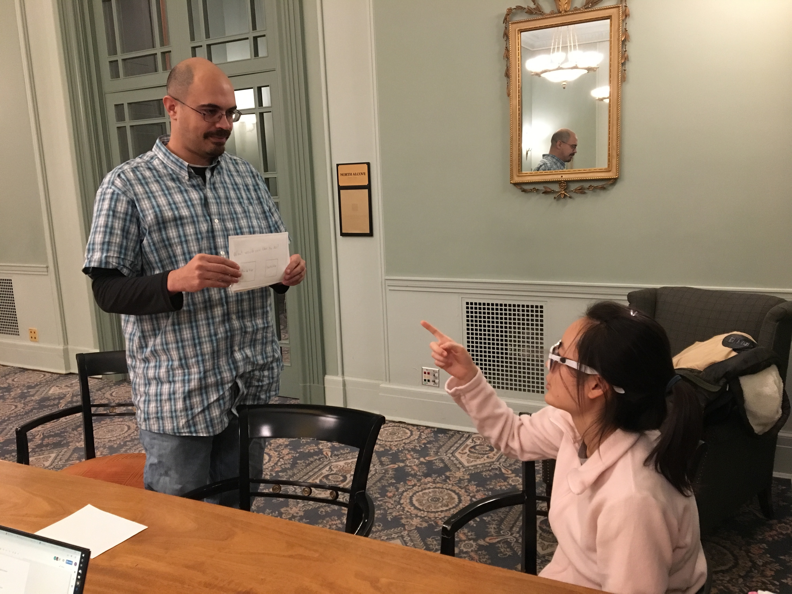
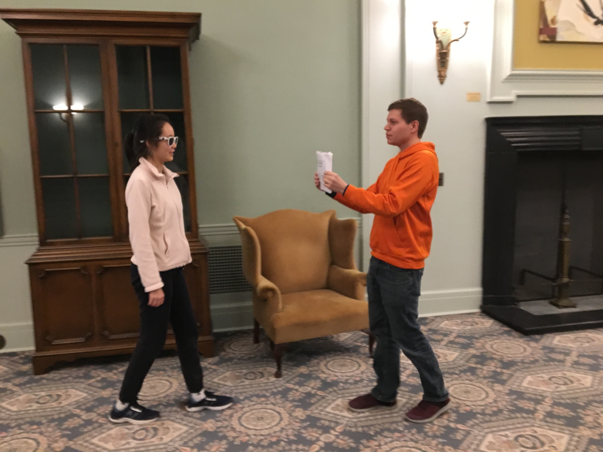
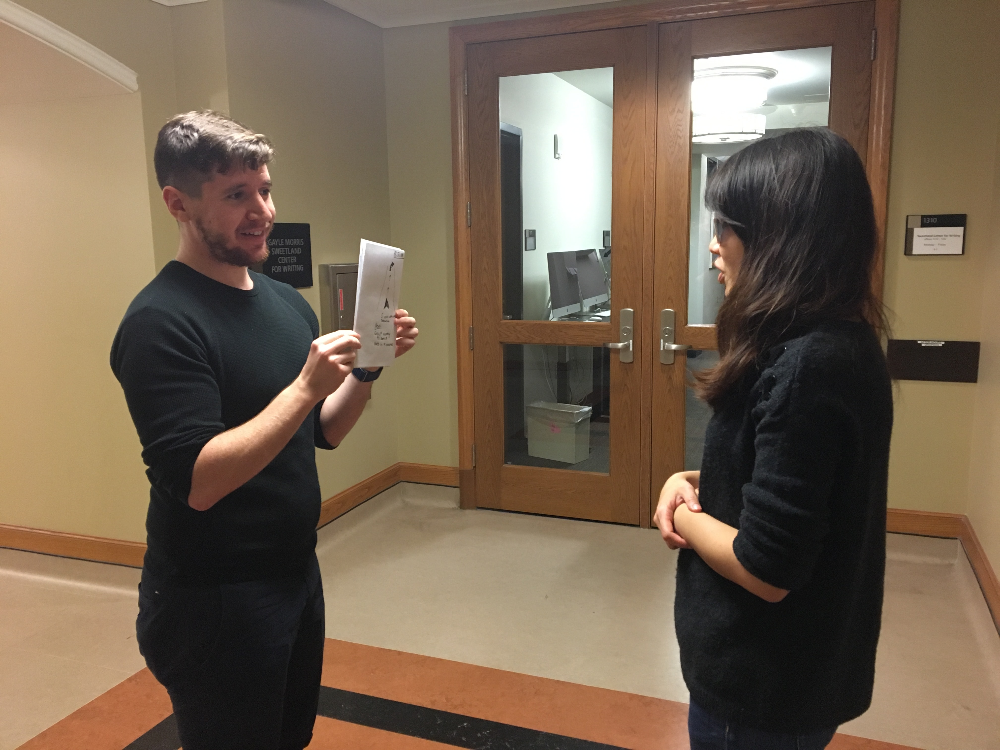
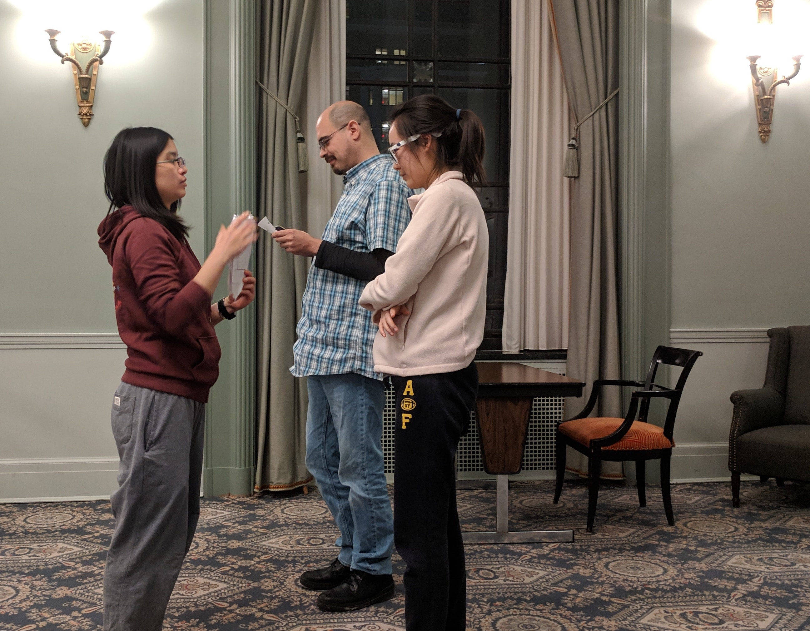
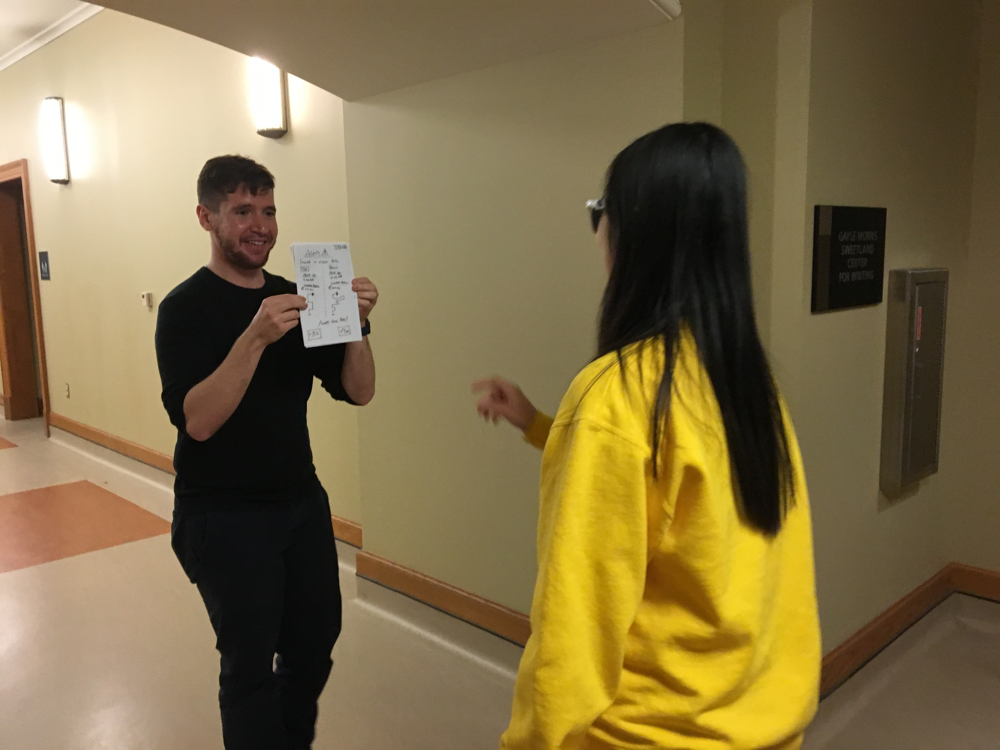
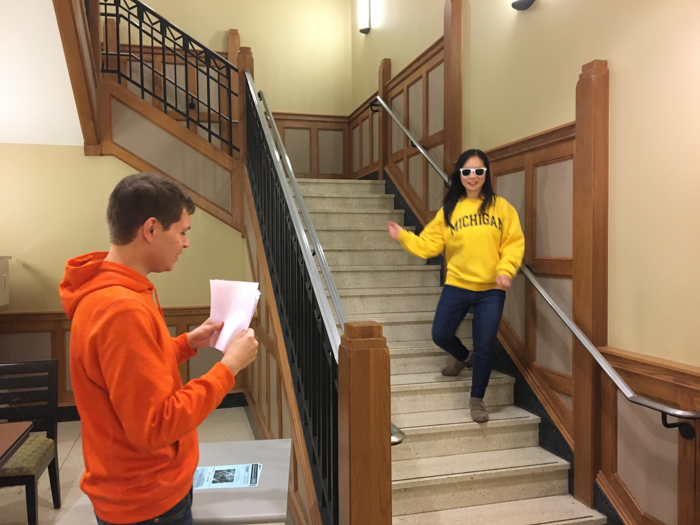
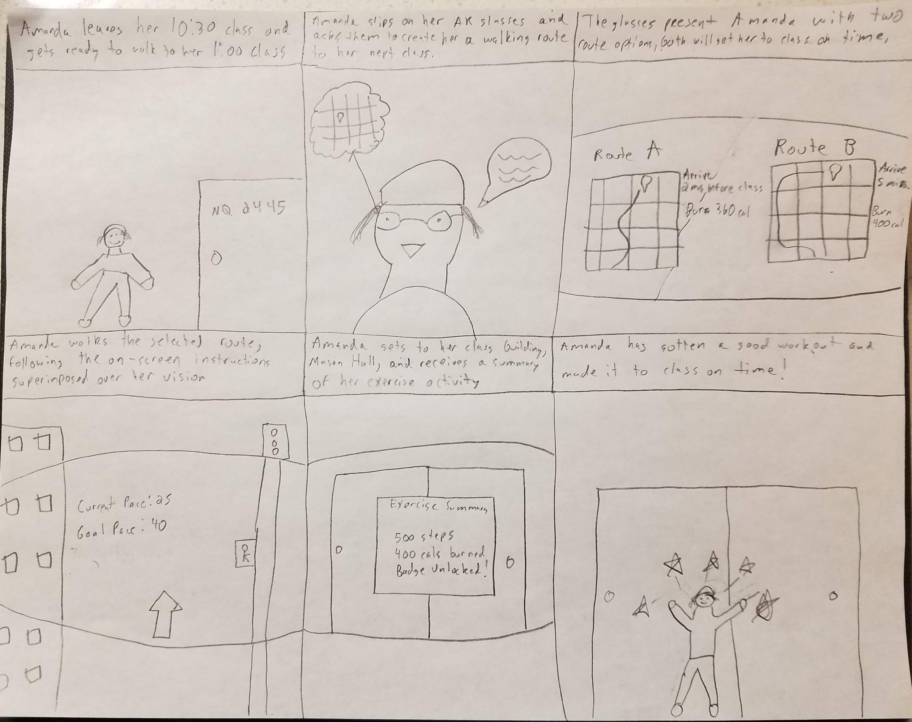

Introduction to Milestone 3
This Milestone document covers the User Enactment study we performed to further refine our design concept. User enactments provided our team with a powerful view of user needs and motivations via the user of props and scenarios that approximated real-life scenarios. After conducting our enactment study, we analyzed the results, performed a new cycle of ideation, and refined our concept into the final system and demo design configurations.
Milestone 2 Recap
In Milestone 2, we developed and deployed a formative study to better understand our target audience: college students needing assistance with maintaining a healthy lifestyle through exercise. We developed 5 overall research questions to help us gain a better understanding of this target audience, they were:
- RQ 1: What motivates the Target Audience to exercise?
- RQ2: What factors prevent target from exercising?
- RQ3: How does Target Audience learn how to exercise?
- RQ4: What kind of exercises does our Target audience actually do?
- RQ5: What resources does our Target Audience use to enable their exercise?
To help us better explore our research questions, we chose two specific research methodologies:
- A diary study where users would fill out what physical activities they did or did not do throughout the course of a week.
- An in-depth survey that which was sent out to thousands of college students to learn more about what exercises they perform, how they learned to perform them, and what resources and tools they use to help enable exercise.
Each methodology was chosen specifically to help answer the research questions that we developed, with the diary study aimed at answering research questions 1 & 2, and the survey aimed at answering questions 3, 4, & 5.
Using the two different research methods and the data we collected with each, we narrowed down our findings into three critical factors. Those factors were: time management/convenience, cardiovascular and strength training, and providing guidance on how to do exercises correctly. These factors were chosen specifically because of high response rates and consistency shown throughout both studies that each of these factors were important to our target audience.
With these factors narrow down, we began and ideation session where we each created brand new concepts based solely around the research and the data we collected in Milestone Two. We then took all of the concepts we created (around 20) and narrowed it down to three choices which best represents the data we had collected from our research.
Concept 1: Life as a Gym AR Glasses
A set of smart AR glasses which we have called Life Is A Gym (LG) which are specifically geared towards the time management aspect of our research findings. When worn, these glasses integrate themselves into your everyday life and routines and help identify various exercise opportunities for the user as they go about their day. For example, if a user is walking home from class, the glasses will be able to find a route that takes them home, and while they are walking on that route, the glasses will point out various objects in the environment that the user can use to sneak in a quick workout or just help them get some more physical activity. These glasses were designed specifically to cater towards the “time management” aspect of our milestone 2 findings by helping users get in exercise without having to devote a large chunk of time of their day to go to the gym.
Concept 2: Smart Exercise Mat
The second concept we created was a smart yoga mat which is geared at providing guidance to our users while they perform their exercises. the smart yoga mat would feature LED panels as well as a large screen interface that can help direct users on how to perform specific exercises, for example, if a user wants to learn how to do proper push-ups a short video will appear on the screen and the exercise mat will light up specific areas for the user to place their hands and feet so they have correct form during the exercise.
Concept 3: Exercise Gesture guide
The final concept was a smart exercise gesture guide. This device would be a touch screen with a camera integrated into it that a user can place in front of them while performing a workout or an exercise. The guide will constantly monitor the user's movements and will be able to show the correct form based on the exercise that is being done.
These three concepts and the research that we gathered were the main activities that were part of Milestone Two, and now Milestone 3 picks up where they left off.
Milestone 3 Concept Narrowing
After developing our three concepts in Milestone two, we needed to choose a specific direction to follow for the remainder of the class and our studies. We decided to look again at the data we collected for Milestone 2 and from that data it was apparent that time management was by far the largest issue that our participants addressed during our previous studies. With this in mind we decided to pursue the solution that most closely aligned with our findings and decided to work on our “Life as a Gym” Augmented Reality (AR) glasses.
Study Design
User Enactments
To help us gain a better understanding of both our concept and user perceptions surrounding our concept, we decided to conduct User Enactments. The goal of User Enactments is to have users go through and experience the concept you are trying to bring to life; by “acting” out various scenarios in which the product or service will be used. User Enactments were extremely helpful for our specific concept because it revolves around a technology that is still fairly new, and that most people have yet to interact with.
When developing the scenarios for our user enactments we had two distinct goals in mind for each scenario. The primary goal was to test out a unique feature that our glasses would have. For example, one scenario is focused on testing navigation, while another scenario would test out more of the exercise component. The second goal of each enactment was to learn more about users perceptions of augmented reality. We decided to add this second goal because AR is a fairly new technology that most people haven't used or experienced yet. We wanted to ensure that the system we are developing meets their expectations about what AR is, but also creates a system that doesn’t cross any personal lines or boundaries.
How the enactments were executed?
Setting:
To help make the user enactments more realistic, we utilized the basement of North Quad to conduct our scenarios. This was chosen for two reasons: first, we needed a large enough space so users could walk around as if they were wearing the glasses, and second, it would be difficult to test outdoors because of different lighting and weather conditions.
Moderation:
During our user scenarios, we provided several different moderation styles to try and test how users would expect LG glasses to work. In scenarios 1 and 4 for example, the LG glasses would speak directly to our users, while scenarios 2 and 3 made users read screens manually with no voice assistance. In addition to receiving feedback from our scenarios, this helped us learn how participants would like LG to interact with them, and how the participants can interact with LG.
Additionally, before each scenario began, users were given a description of the LG system, which is as follows:
"Life as a Gym, or LG for short is an augmented reality system that integrates into your daily routine and schedule and helps you find exercise opportunities as you go about your everyday life. There are three different ways that you can interact with the system, you can use voice commands, gesture controls, or there are also two buttons located on each side of the glasses which allow you to interact with the system."
Users were then given the chance to ask questions to clear up any misunderstandings or confusion regarding the system.Stationary Vs Mobile:
We had two distinct ways of running our scenario’s separate of moderation:
- The first way we conducted our scenarios was stationary, for where we had users stand or sit in one spot while they went through our scenarios. We used stationary moderation for those scenarios that involved set-up or planning operations, rather than the core experience of using LG in a route. Several of the scenarios we enacted such as scenario 1, 4, and 5 did not require users to move around.
- The second way we conducted our scenarios was having participant's walk around, where the moderator of the scenario would be walking in front of them and showing them screens at certain points throughout the scenario. We chose to do this type of moderation because we wanted to get a slightly more realistic view of how the glasses would work in a real-world setting. Additionally, having users walk around provided a lot of feedback about how they felt about doing certain tasks while having to move.
Participants:
In total, we ended up testing LG with 9 unique participants. However, not all participants were able to interact with every part of the system. When we performed our original scenario testing, we only had four distinct scenarios. Initially, we ran through these scenarios with six unique users. Then, we decided to add an additional three scenarios based on feedback and ideas that we received about the system. These three scenarios were tested by, an extra three unique participants, and also two returning participants, that helped us when testing scenarios 1 through 4 originally.
The Scenarios
To help test out our Life as a Gym glasses, we originally developed 4 scenarios for our users to participate in. After running users through the first four scenarios, we received a lot of feedback that prompted us to add 3 additional scenarios to explore some of the feedback that we had gotten. In total, we ended up testing 7 total scenarios with our participants, and they are as follows:
User Scenario 1
Scenario 1 Description:
"For the first scenario, we would like you to pretend that you are staying at a hotel in a city you’ve never been to before (Cairo). You’re starting to plan out your first day in the new city, and you’re going to use LG to plan out your day trip, with some exercise thrown in. You know that if you use your Life as a Gym (LG) Augmented Reality classes, you can have them help you place your day trip. You know you have 1 meeting, and one place you’d like to visit that day (The Great Pyramids)"
Scenario 1 Walkthrough
In scenario 1, we had users work through planning out their trip in Cairo, Egypt. They were shown screens that allowed them to pick various locations to travel to, and also included a map screen that let users see their routes and stops along the way. Users were first asked to put on our prop glasses, receiving a welcome back screen after they did so. Next, users received a dialog screen asking them to either “Plan a Trip” or “Start a Trip”. Our intent was for the user to use the “Plan a Trip” option, but we accepted either input here. Next, users received a loading screen indicated that LG was automatically building a schedule for them without their direct input. Finally, LG showed the user the final scheduled route, so that the users would know what places they would be visiting.
Goal of scenario 1:
The primary goal of scenario 1 was to test out how users felt about using our Life as a Gym glasses to schedule and plan out their day. We wanted to see if this felt like a natural interaction, or if they were more inclined to use something else for planning. Secondly, if users did want to use the glasses for such a function, it allowed us to learn what steps should be involved with the process and how everything should function. Finally, this was one of the scenarios that tested high level of automation. We wanted to see if users were comfortable with LG having complete control of the experience, and if not, what the boundaries for automation were.
User Scenario 2
Scenario 2 Description:
"For the second scenario, we would like you to pretend that you are on campus, and walking to your classes by yourself. You’ve arrived on campus 30 minutes early, and have a little bit of extra time to kill; you are also wearing the life as a gym AR glasses, which you use to help get some exercise on your way to class."
Scenario 2 Walkthrough
In scenario 2, we had users assume the role of a college student that is on their way class. They put on their LG glasses and are presented with a screen that says “Would you like to play a route to class?” If users select yes, they are then presented with 2 different route screens, when they select which route they would like to take, the scenario changes into navigation mode where the user is shown a piece of paper with an arrow on it, guiding them where to walk. After walking for a little bit, the user is shown a screen that says, “Exercise opportunity found: Stairs” along with a picture of the activity. If the user accepts the activity, they are shown the navigation arrow again until they get to the area with the stairs. Once they arrive at the stairs, they are shown a screen that tells them how to do the exercise, in this case, stretch, walk up the stairs, and repeat 3 times. Once the user finishes their exercise, the system shows them a summary of what they did in terms of calories burned and duration, and then switched back to the navigation arrow, to guide them on the rest of their route.
Goal of scenario 2:
The primary goal of the second scenario was to test out how the glasses will work when a user is walking around on a route that they know well. This scenario also helped us get feedback about how users would like to be alerted about exercise opportunities, how they would like navigation to work, and what kinds of information needs to be displayed to users while wearing the glasses.
User Scenario 3
Scenario 3 Description:
"You’re in your History 401 class and the instructor says that they’re going to end lecture 10 minutes early. You’re surprised but relieved because this gives you extra time in the day. Maybe you can fit in a brisk walk into your day? You normally have a meeting across campus after your History class. Since you’re wearing your Life as a Gym AR glasses, you’re always looking to fit in some extra time to exercise."
Scenario 3 Walkthrough
In scenario 3, we asked users to pretend that they got out of class earlier than their schedule said, and also that they had a meeting across campus in 20 minutes. The scenario begins with a reminder that LG glasses have detected you are no longer in class, and that they have detected several routes a user can take to get to their meeting. The user is then presented 2 different routes for them to take, one that is shorter and costs them less time, and one that is longer and costs them more time. Once users select their route, they are shown a navigation screen that shows them a street view of where they are, and where they should make upcoming turns. After walking for a bit the user is then shown an exercise alert that has a graphic along with the amount of time it will take to complete the exercise. If the user says yes, then they will go off until they reach the exercise, and then after their exercise is complete they will be directed back on route to their destination and shown a summary screen of the activities they did. If they say no, they will switch back to the street view of guidance until they reach their destination, where once again they will receive a summary screen of what they did.
Goal of scenario 3:
For user scenario 3, we decided to focus on how our concept would work if a user was not adhering to the schedule that the system knew. This scenario gave us a chance to see how user’s would feel about the system automatically knowing that they were no longer in class, and how they would respond to the system with that in mind. Additionally, scenario 2 focused on the concept of time; users needed to pay attention to both how long the routes would take, and how long the exercise in the middle would take in order to make it to their meeting in time.
User Scenario 4
Scenario 4 Description:
"For the 4th scenario, we would like you to pretend that you are in a shopping mall with your friends (walking together). However, you are the only one who is wearing our Life as a Gym glasses. While out, you would like to get some exercise, but are unsure about what your friends would like to do in this situation. "
Scenario 4 Walkthrough
In scenario 4, we asked users to pretend they were going to the mall with a friend of theirs. LG is already aware of their schedule and knows exactly who they are going to the mall with. When the user gets to the mall, they are alerted with a screen saying there is an exercise opportunity. They then get to choose if they want to alert their friend about the exercise opportunity. If the user selects no, then the glasses prompt the user to continue the exercise by themselves, however, if the user selects yes, then the friend is automatically sent a text message which asks them if they would like to join the main user in doing an exercise; the alert also tells the friend exactly what the exercise is. If the friend selects yes, the users then meet up and do the exercise, if the friend selects no, the user is then prompted to “double-check” with the friend manually; once the user checks with the friend they can let the system know their decision. If that decision is a no, then the system asks if the user wants to continue by themselves, if the user selects yes, then the system guides both users to the exercise.
Goal of scenario 4:
The primary goal of scenario 4 was to learn about how users would feel about using the LG glasses in a social setting and also explore where the boundaries were for users that the glasses needed to respect. For example, would they enjoy getting notifications from LG when they are out with their friends? Additionally, this scenario let us test out how and if the LG glasses should have any interaction with the primary user’s friends, and how the user would feel about the system sending automatic notifications to the friend without the user having control over them.
User Scenario 5
Scenario 5 Description:
"For user scenario 5, we would like you to imagine that you just purchased LG glasses from the store, you took them home and found out there is a companion smart phone app that connects to the glasses. The box tells you about how the companion help helps you get a better experience with your phone, so you open up the app and go through the profile creation process. "
Scenario 5 Walkthrough
In this scenario, users are taken through the onboarding mobile application that will be a part of the LG glasses. When they start the scenario they are asked to sign in or make a new profile, as this is the first time they’ve used the system, they make a profile. Users are then presented with a screen asking for physical information about them: name, age, weight, and height. When users click to go to the next screen, they are asked to select several exercises that they would like LG to “find” (In this case “find” means what exercises it scans for and shows the user in their environment) for them. After selecting the exercises, the user is then asked to sign into the email associated with their calendar. Once signed in, they get taken to a screen which reads, “Select which activities you would like LG to automatically monitor and update.” The user then selects which activities from a list of: route information, exercises, favorite exercises, and pace/speed. After this screen the user is shown the profile completed screen. Once the user clicks out of that screen, they are instructed to put on the glasses and are shown the permissions screen. The permissions screen asks for camera, microphone, contacts, and location permissions.
Goal of scenario 5:
The primary goal of scenario 5 is to learn more about what information users are comfortable with LG knowing as they use the glasses. We felt it was crucial that we explore how users felt about privacy and automation during our user enactment. This scenario provided meaningful context to have that conversation with users. Additionally, this scenario helped us explore how much information users need to make choices when setting up the tracking and monitoring aspects of the system. For example, do they need to know why LG is asking for permission to access their calendar?
User Scenario 6
Scenario 6 Description:
Scenario 6 is the only scenario we used where users go through the same steps as a previous scenario, in this case scenario 3. They see all the same screens and perform the same activities, however, at the end there is an additional screen that is shown to the user; this screen shows that the system has automatically made updates to the user’s profile and preferences based on the activity they performed.
Scenario 6 Walkthrough
Users walked through the same process that was listed for scenario 3, with the only addition being a screen shown at the end which informed the user that their route information and pace were updated, along with the stairs being added as a favorite exercise.
Goal of scenario 6:
The primary goal of scenario 6 was to learn about the privacy and monitoring aspect of LG glasses during the actual route experience. Specifically, we wanted to see how users felt when presented with a message that the system had been automatically monitoring them during one of their walks to a destination. Would they be okay with the monitoring? Does it creep them out? Questions such as these were what we wanted to answer with scenario 6.
User Scenario 7
Scenario 7 Description:
"For the following scenario, you are in a city you’ve never explored, and you’ve used LG prior to build yourself a route to learn the city, with exercise built in. You are currently walking your scheduled route, when you see a small shop called “The Red Carpet”, which is not on your route. You’d like to visit the shop, so you step off your route to visit it."
Scenario 7 Walkthrough
In this scenario, we asked users to pretend they are visiting another country, in this case Cairo, Egypt. Users are told at the beginning to start heading off in a new direction that was not part of their originally planned route. As user’s start heading in that direction they receive a prompt which alerts them that the system has detected they are no longer on their route, and also asks them if there is somewhere else they would like to go. If a user says yes they are shown a screen asking them where to go; when they input their destination, another screen comes up asking them if they would like to add that specific screen to their schedule. If the user says yes, then they are shown a map screen with their route information updated. If the user chooses no, then the navigation ends immediately, and alerts the user that they can resume their old route at any time they wish.
Goal of scenario 7:
The primary goal of scenario 7 is to learn about how the system reacts when a user chooses to ignore its command, and also learn how the user wants the system to handle that situation. Additionally, this scenario helped us learn about and engage in a dialogue with our users about how the personal navigation aspect of our system should work.
Photos From The Scenarios
     Scenario Changes:
As we worked with different users through our various scenarios, we encountered several issues with several of the scenarios and UI screens which needed to be addressed for future users. In particular, after our initial test with our first user, each member of our team made significant changes to both our scenarios and the screens presented. In general, there were a lot of issues with map based screens not being accurate enough for users to make decisions, and we also received feedback about too much text being on our initials set of screens. We reworked out map screens to be more like Google Maps, and we replaced text with graphics where possible.
In addition, we found that Scenario 1 and Scenario 4 were not returning as useful of data in general as we had hoped. Scenario 1 did not utilize features unique to our app, and the social situation in Scenario 3 was universally rejected by our initial batch of test users. To compensate, we added 3 new scenarios for a second batch of test users.
Additionally, when we added our extra three scenarios, we purposefully designed the screens to more closely relate to some of the issues that we had with our original four scenarios and also to address the feedback we had gotten from our original 6 users. Below are some of the changes that we made to various screens and scenarios:
Debriefing Sessions:
After each enactment concluded, we sat participants down and engaged in an in-depth debrief session to learn more about their experience using the LG glasses. Our debrief sessions generally lasted between 20-30 minutes, however some sessions approached an hour spent just on the debrief. Each debriefing session went a little different, because each participant had their own unique view and comments about the concept.
Additionally, we also had smaller, scenario specific debriefing sessions after a user would complete a scenario. For example, if we just finished running through scenario 1, we would ask our participants specific questions about their experience with that scenario. These small debriefs also aimed at clearing up any issues that were experienced during a scenario. For example, if a user had a tough time interpreting a screen we would address it after the scenario so it was still fresh in their mind.
Below are some of the topics we covered in the debriefings
Questions asked
- Overall, what did you think about the LG glasses?
- What are your thoughts on AR?
- What did you think about walking and reading?
- What kind of indicators would you like LG to use?.
-
How will they interact?
- Voice
- Gestures
- Buttons on glasses
- What information do they expect to see/hear about exercises?
- What kind of visualizations do they expect to see?
- What didn’t line up with their expectations?
- Do they want LG to look at their camera?
- How much do they want LG to tell them what to do and where to go?
- How users want LG to react when users derailed the situations.
- How do you prefer information being presented on LG?
- What sorts of information should LG know about you?
- How should LG react in social situations?
- What do you think about LG potentially tracking and monitoring you?
Data Analysis
In order to analyze all of the data we collected, we created affinity notes from each user and for each scenario, and then constructed an affinity wall to categorize them. The affinity wall can be found in the study results section of the documentation.
Study Result
In this section, we want to highlight some of the findings we discovered from our user-enactments. We analyzed our user enactment data via an affinity wall. We chose to conduct an affinity wall because we noticed some patterns during our user-enactments, many of them appearing to be surface-level issues. We believed these issues required further analysis because they highlighted areas of our concept that either were neglected or required extra attention. The affinity wall allowed us to dive deeper into the surface-level issues to get at the true root cause.
Furthermore, we chose our method of analysis as an affinity wall because it's an exceptional method that allows grouping similar complex ideas into more understandable digestible chunks. This is important because after conducting our UEs we had over 290 pieces of information to analyze. For our affinity wall, we used three levels of interpretation. Yellow, – the basic level of notes, blue – a cluster of related ideas from the yellow level, purple – a batch of blue level notes that represent the core problem areas. See Figure 1 for an overview of this breakdown.
Using the affinity wall technique, we converted our individual data points into high-level overall findings. These findings, taken in at the purple note level, are discussed further below.
1. Users want LG to be a solo experience
We had initially hypothesized that users would enjoy exercising with other people and doing certain exercises in the public. We learned in our user enactments that this wasn’t the case at all. In fact, many people were uncomfortable dragging their friends into doing exercises together in public. Our users wanted to prioritize their friends, and not the exercise experience. We also learned that spontaneous push-ups or situps were socially awkward for many people. We need to restrain the exercise types LG will suggest to those that will not be really obvious in public. We learned these results from scenario 2 and 4.
2. Users Expect LG to remain within its purpose of exercise time management and restrict its data collection/use otherwise
Although we valued user's privacy tremendously, it was fascinating to learn that our concept did generate privacy concerns, and didn't provide clear explanations of data collection throughout the process. Many users wanted our concept to primarily focus on fitness related information. They did not want LG deep diving calendar details or tracking personal locations, such as homes. They also expressed interest in minimization of the data that LG collects. Ultimately, they wanted to understand the intricacies of how their data is being used. On additional caveat to these findings was the use of voice. Some users expressed dissatisfaction with using voice all the time. We learned these results from scenario 3, 4, 5, 6 and 7.
3. Core LG time management paradigm is time-optimized routes relative to a calendar schedule
One of our hypothesis for our concept was that LG would be responsible for handling user's time and suggesting exercises and routes that fit their schedule. This hypothesis was further refined in our UEs because many users expressed interest in improving how LG routes them based on how much time they have available until their next appointment/meeting. They had also reflected, they'd like to see specific time information. We learned these results from scenario 1, 2, 3 and 6.
4. LG users expect a top-tier navigation experience with multiple routes and the information required to choose between them
Through our user enactments, we've learned that our users needed additional information when using the navigation in LG. Detailed information about where they're heading, another point of interests, and fitness related information (steps, calories burned, etc) were common health metrics that several users had talked about. We learned these results from scenario 1, 2, 3, 4, 6 and, 7.
5. LG design contains a constant tension between automation and control
One confounding area that we found was based on giving control to the user and how they interacted with the system. Although they wanted the system to do most of the automation in terms of navigation and suggesting exercises, users still wanted the ability to choose between different routes and even decline exercises they didn't want to do. We learned these results from scenario 1, 3, 4, 5, 6 and, 7.
6. Users want to control LG primarily via voice, but with a gesture for fine control actions
During our ideation phase, we had believed that users would interact with our system primarily with the buttons on the sides of the device. We have come to realize that this was false and it was more natural for our users to use voice. Although most used voice, some users preferred the use of gestures for finer control selections. One example of a “finer control” situation was the stop selection screen from Scenario 1, where users wanted to use gestures to control which stops were selected. We learned these results from scenario 1, 2, 3, 5 and, 7.
7. The more complex LG actions require information step-by-step instructions
After completing the user enactments, we had learned that the users were confused about what certain terms or actions were supposed to convey. Users had to conduct trial and error to learn what the terms or actions were supposed to do. This issue showed up in several areas, but most noticeable in our mockups of the first-time setup. We will have to take concentrate on onboarding in particular, as this concept is emerging technology that many users won’t have a basis to understand. We learned these results from scenario 2, 3, 5, 6 and, 7.
8. The UI Design of LG should be targeted to support the active walking/running experience
The user interface failed to convey the necessary information while the users were active. This problem was proportional to the amount of text available on the screen. This was also evident in scenarios where users were not active but were still overwhelmed by the amount of information. Although this was evident throughout all of our scenarios, it was especially key during the scenarios 1, 2, 3, 6 and, 7.
9. LG users expect to receive informative, motivating feedback on the efficacy of their exercise
We also learned that users enjoyed and expected positive feedback at the end of a route or an exercise. Many users voiced their thoughts that this would motivate them to continue using LG. They also enjoyed seeing the health-related information that showed the impact of choosing a longer route or spontaneous exercise. These two points were mainly reflected in a summary screen in scenarios, 1,2 and, 6.
10. Additional Pain Points.
Although we were not able to group these two final points, we believe that they are critical in our designs.
1. The UI has to reflect on the specific actions a user can take.
Many users were confused on how we presented information on in the AR system. Therefore, they failed to identify the interactions and conceptualization of what to do in certain areas. This was reflected in scenario 1, 3, 4, 5, 6 and, 7.
2. Importance of Safety
Safety was a big consideration after the fact that users claimed that they may be afraid to use this device in public or at night. We had not predicted this consideration but since two users brought this to our attention, we thought it would be best to highlight it. This was reflected in scenarios 2 and 3.
Link to the rest of the affinity wall.
Ideation and Selection
Based on the research findings, we felt like we had enough information to ideate and further refine our design concept. To guide our refining, we used the following core principles, which were derived directly from the study findings we describe in the section above:
- Prioritizing individual usage
- User perceptions about public exercises
- Better user control
- Respect user privacy concern
- Supportive guidance
- Non-Distracting User Interface
Below are the decisions we made regarding how LG could better serve users through recommending and fitting exercises into their daily lives.
1. Focus on individual usage scenarios
According to our research, users feel uncomfortable with involving their friends in LG activities. Most of them would not use this feature in social settings. Therefore, we decided to focus on individual usage instead of involving other users into activities. We won’t build in any activity features where multiple people are using LG routes together.
2. Recommending walking and running as primary exercises, climbing as secondary
We found that users feel awkward doing some exercises in public such as stretching, but walking and running are what most users are comfortable with, and climbing is what some users really enjoy. Therefore, we decided to focus on these three opportunity areas.
3. Display information visually and verbally, and support user input with voice and gesture control
Users worked with voice and gesture controls extensively in our study, and text is an important assistant for users especially in a noisy environment. However, the amount of text we used in the study was too much for users to read and was placed in such a manner as to impede the users sight. Therefore, we will keep the voice interaction, reduce the text to a minimum amount, and place text on side part of the LG view to ensure users can clearly see through LG glasses.
4. Provide multiple choices
Overall, users prefer having moderate levels of choice, particularly in the realms of route selection and user profile preference. When LG detects an opportunity area for users, it will provide a multiple exercise recommendations for users to choose. When users are moving from one spot to another, LG can suggest multiple routes with information such as choice in time taken, intensity of exercise, and distance.
5. Only track exercise relevant data
Users had privacy concerns and did not like to have LG access their friend lists, contact information and any other personal background information, so we will only track user calories and exercises for user reference. We won’t track information such as home locations, social contacts, time spent at a location, or other details that could be used to infer personal information the user isn’t actively sharing.
6. Provide calories, time, and health relevant information
Based on user feedback, calories burned was the most important health information to be tracked. Time is also important because they do not want to be late due to doing extra exercises on their way, and they prefer to see how much time will take and how much time left for them to get to their destination. In addition,. Our subjects mentioned some existing products and services such as Fitbit and MyFitnessPal as comparator products that show good amounts of health information. We will relook at these comparator products, and use their health visualizations as a template for our own. We will also look at adding a personal goal structure to allow users to specify goals that they can measure their health information against.
7. Provide enough guidance for on boarding and data usage
LG represents powerful, emerging technology, and a correct, informative onboarding sequence seems necessary to introduce our users to the product, based on our study results. We will need to provide an onboarding walkthrough that explains basic AR concepts, as well as the primary features of the app. Our first-time setup phone experience will need to be particularly informative, so that users know what the different setting are, and how they affect the glasses experience. In addition, we will articulate how the collected data will be used, so users will be informed and will be more comfortable with providing the data.
8. Non-Distracting User Interface
UI design should be optimized to support the visual experience of walking/running. UI design should be non-intrusive and minimalistic, allowing the user to maintain situational awareness of the real-world environment.
System Proposal
Our final system proposal is a time-management system designed to integrate cardiovascular exercise into the daily non-exercise routine of a university student. As the student goes about their daily exercise activity, the system will scan their calendar system and compare it with location data to generate ad-hoc walking/running routines that still fit with the students schedule. These system consists of the following sub-components:
- A set of AR glasses that control the primary walking/running experience. These glasses overlay the users vision, and provide Google Maps style walking/running guidance. At the beginning of their travel routine, users put on and activate their glasses. The AR glasses then calculate possible walking/running routes based on a variety of user-specific information, and then provides the user a choice of routes. The primary categorization metric for the route selection will be time before the next event on the user's schedule, but the app will provide additional selection criteria, such as route distance, calories burned, points of interest along the route, and other factors. Once a route has been selected, the glasses provide step-by-step navigation, scanning and updating the estimated time of arrival as needed based on real-world conditions. Once the route has been completed, the glasses will provide a summary screen showing how the exercise fits into the users overall exercise experience.
-
A companion smartphone app that lets the user view and control functionality that would be awkward to deal with while walking around. The companion app includes the following control features:
- The ability to enter in personal metrics (height, weight, etc) that the glasses will use to generate routes.
- The ability to select what calendars the glasses can see and make assumptions on.
- The ability to enter in personal health goals, which the glasses will also use as input into its routing algorithm.
Demo Proposal
We will create a medium-fidelity prototype to demonstrate our unified concept to target users. We say medium-fidelity, because our concept is ultimately built around the idea that extremely light-weight, nearly-invisible AR glasses and contacts do not yet exist. Instead, we will use an existing AR glasses system to give our users the first-person perspective on what the experience would be like, assuming that those light-weight system really did exist.
This demo will not be a fully-developed AR application with every feature specified in our system proposal. We have neither the time nor expertise to develop every feature listed in our system proposal. In addition, the “scanning component” of the system proposal requires image processing and context awareness technology that, so far as we are aware, does not yet exist. Our goal will be to instead create a simulation of the overall experience, using an AR app with appropriately design UI components to give the impression of a working app, and prepositioned AR markers that will resemble the experience of “scanning” the environment.
Hardware: We will need to use the following hardware components to create our product:
- Samsung Gear VR/AR glasses (already acquired)
- Samsung Android-based phone compatible with Samsung Gear VR/AR (already acquired)
- Image Marker printouts.
- Earbud Audio Input/Output Solution: We will use earbud with an in-built microphone connected to the Gear VR headset as our solution for any audio input/output needs.
Software: We will need to use the following software components to create our product:
- AFrame AR/VR framework: We will build the core application in AFrame. AFrame is a web-based framework that allows for a browser-based AR experience. An advantage of this approach is that the applications developed will run on any device that has a compatible browser (Firefox or Chromium), and access to a camera. This gives us the ability to record experiences on both the AR glasses and with a laptop, allowing us to piece together an overall video experience using a variety of platforms. We will run our AFrame app off a Github Pages website.
- Oculus VR App: The Gear VR requires the use of a special app that automatically activates when the phone is inserted into the Gear VR headset. We will run our browser-based AR experience IN the Oculus VR app.
- Youtube Gaming: We would like to capture the visual experience of our AR app as prospective users experience it. Our currently plan is to use the Youtube Gaming app to capture the screen and microphone output of the Gear VR. This approach currently suffers from one flaw: the Gear VR app outputs in stereoscopic view, which means the recording audio is split up into two views - one for each eye. We will continue searching for recording approaches that will better display the actual experiences users have with the system.
Demo Storyboard
Limitations/Shortcomings
In our study, although it was exhaustive and encompassing we did encounter speed-bumps along the way. The first issue we've struggled with was a lack of time and availability to work on each phase of this project. For example, during our initial ideation phase where we were narrowing down our concept, we weren't able to consider other potential concepts that could have also solved the problem. During this step, we solidified our decision process to three ideas. Then, we narrowed down between those three with a variety of criteria. Although it wasn't documented in the best way, we could have taken a step back and spent additional time on this. In turn, it would've resulted in additional detail during the ideation phase.
The next shortcoming we faced was the way our study was designed. After narrowing down to a single concept, Life As A Gym, testing the concept was next. The critical aspect of our concept was the augmented reality feature. As this technology is still relatively new, it became very clear to us that it is difficult to rapidly prototype and test in it. Therefore, we relied on using paper prototypes in our process. This was a problem because paper fails to communicate the core principle of augmented-reality. We sought to 'fake' the augmentation by holding the paper in front of the user, but regrettably, it doesn't get the same experience across.
Additionally, the specific medium caused us to limit the amount of information we presented onto the paper prototypes. Because of this, we hypothesize, it had caused problems for how our users interpreted the screens and scenarios. In subsequent testing, we hope the fidelity will not be a limiting factor.
With this being said, it is also important to mention the various ways our users interact with the system. Although we had hoped they would use the buttons built into the glasses, they naturally used their voice. This was a shortcoming because all of our designs were not conceptualized with the interface for button use. In retrospective, it made sense why users chose to use their voice to interact with the system. We hadn't planned for this. Thus, a contradicting statement that we've learned was that people worried about their privacy, but they naturally used their voice to interact with the system. If we had the available resources, we would have done our testing with a real augmented reality device.
Conclusion
Summing-up, for this milestone we; narrowed our focus to a single design concept, conducted and iterated through several user-enactments, had 9 unique participants and, analyzed our findings with an affinity wall. Using all of this information, we propose a plan to prototype and demonstrate a medium-fidelity prototype that incorporates our biggest findings and features. Although there were limitations with this study, we are confident in moving forward with our concept. With this being said, after completing an initial prototype, we plan to do additional tests of the prototype.